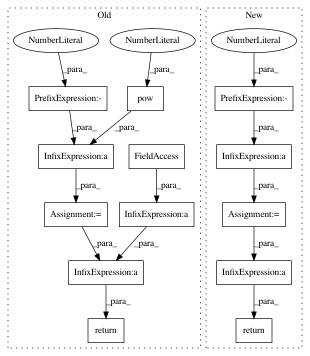

d08f673481a2cfaa0ce702e80cc22cdd25e600e5,torch_geometric/nn/models/schnet.py,GaussianSmearing,forward,#GaussianSmearing#Any#,105
Before Change
self.register_buffer("offsets", offsets)
def forward(self, distances):
coeff = -0.5 / torch.pow(self.widths, 2)
gauss = torch.exp(coeff * torch.pow(distances - self.offsets, 2))
return gauss
class ShiftedSoftplus(nn.Module):
def __init__(self, beta=1, threshhold=20, shift=None):
After Change
self.register_buffer("offset", offset)
def forward(self, dist):
dist = dist.view(-1, 1) - self.offset.view(1, -1)
return torch.exp(self.coeff * torch.pow(dist, 2))
class ShiftedSoftplus(torch.nn.Module):
def __init__(self):
In pattern: SUPERPATTERN
Frequency: 3
Non-data size: 13
Instances
Project Name: rusty1s/pytorch_geometric
Commit Name: d08f673481a2cfaa0ce702e80cc22cdd25e600e5
Time: 2020-05-31
Author: matthias.fey@tu-dortmund.de
File Name: torch_geometric/nn/models/schnet.py
Class Name: GaussianSmearing
Method Name: forward
Project Name: dpressel/mead-baseline
Commit Name: 78a7f7de24c34235d0784a5781f46de34d2336eb
Time: 2019-10-29
Author: dpressel@gmail.com
File Name: python/eight_mile/pytorch/layers.py
Class Name: LayerNorm
Method Name: forward
Project Name: rusty1s/pytorch_geometric
Commit Name: 6ad34e5887f847aeb9f681e8f290d5877b76e52b
Time: 2020-05-13
Author: matthias.fey@tu-dortmund.de
File Name: torch_geometric/nn/models/schnet.py
Class Name: GaussianSmearing
Method Name: forward